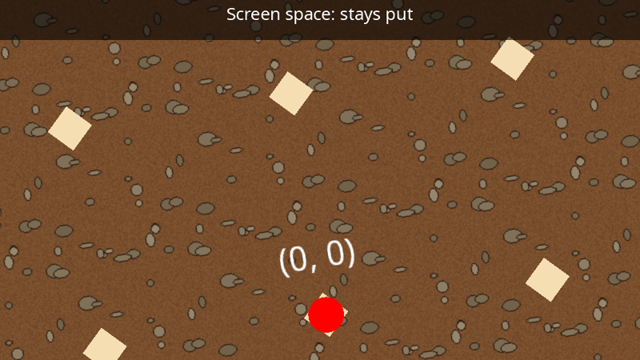

Cameras
A camera decides which part of the 2D (or 3D) world ends up on a surface. Every time a draw stage is rendered, you choose the camera to render it through:
q.Draw(drawStage, camera, windowRenderTarget);

2D cameras
Create a 2D camera (ICamera2D) in CreateResources():
_camera = yak.Cameras.CreateCamera2D(960, 540); // virtual resolution; zoom defaults to 1
Virtual resolution
The two numbers are the camera's virtual resolution: how many units it shows across and down at zoom 1. They are not pixels. Whatever the camera sees is stretched to fill the whole surface it is rendered onto (or the current viewport), whatever that surface's real size.
This makes your game resolution-independent. Design everything for, say, 960 x 540 units, and it fills a 960 x 540 window, a 1920 x 1080 window, or a full-screen 4K display in exactly the same way.
Tip
Keep the camera's aspect ratio (width / height) the same as the surface's, or the picture will be squashed or stretched to fit. For a window that can be resized to any shape, either accept the stretching, or update the virtual resolution to match the window's aspect ratio when you receive WindowWasResized, using SetCamera2DVirtualResolution().
Moving, zooming and rotating
A 2D camera has a focus (the world position in the middle of its view), a zoom and a rotation. Set them whenever you like, usually in PreDrawing():
public override void PreDrawing(IServices yak, float secondsSinceLastDraw, float secondsSinceLastUpdate)
{
_time += secondsSinceLastDraw;
// Look at a point that moves in a circle, zoom in and out, and tilt a little
var focus = new Vector2(200.0f * MathF.Cos(0.5f * _time), 120.0f * MathF.Sin(0.5f * _time));
var zoom = 1.25f + (0.5f * MathF.Sin(0.7f * _time));
var angle = 0.2f * MathF.Sin(0.3f * _time); // radians, clockwise
yak.Cameras.SetCamera2DFocusZoomAndRotation(_camera, focus, zoom, angle);
}
| Method | Sets |
|---|---|
| SetCamera2DFocusAndZoom | focus and zoom |
| SetCamera2DRotation | rotation, as an angle (radians, clockwise from "up") or as an "up" vector |
| SetCamera2DFocusZoomAndRotation | all three |
| SetCamera2DVirtualResolution | the virtual resolution |
The Get... methods (GetCamera2DWorldFocus, GetCamera2DZoom, GetCamera2DRotation, GetCamera2DUp, GetCamera2DVirtualResolution) read the current values back.
A zoom of 2 makes everything twice as big (so the camera sees half as much); 0.5 shows twice as much.
World space and screen space
Every draw request says which space its positions are in:
- World space positions are transformed by the camera's focus, zoom and rotation. Use it for everything in the game world.
- Screen space positions ignore focus, zoom and rotation. (0, 0) is the middle of the view, and the edges are at plus and minus half the virtual resolution (for 960 x 540: x from -480 to 480, y from -270 to 270). Use it for HUDs, menus and backgrounds that must stay put.
Both have +Y pointing up.
public override void Drawing(IDrawing draw, IFps fps, IInput input, ICoordinateTransforms transforms,
float secondsSinceLastDraw, float secondsSinceLastUpdate)
{
// World space: a floor, a grid of posts and a marker at the origin. These move with the camera
draw.Helpers.DrawTexturedQuad(_drawStage, CoordinateSpace.World, _soil, Colour.White, Vector2.Zero, 2000.0f, 1200.0f, 0.9f,
texcoord_max_x: 2000.0f / 128.0f, texcoord_max_y: 1200.0f / 128.0f);
for (var x = -800; x <= 800; x += 200)
{
for (var y = -400; y <= 400; y += 200)
{
draw.Helpers.DrawColouredPoly(_drawStage, CoordinateSpace.World, Colour.Wheat, new Vector2(x, y), 4, 20.0f, 0.5f);
}
}
draw.DrawString(_drawStage, CoordinateSpace.World, "(0, 0)", Colour.White, 30.0f, new Vector2(0.0f, 60.0f), TextJustify.Centre, 0.5f, 0);
draw.Helpers.DrawColouredPoly(_drawStage, CoordinateSpace.World, Colour.Red, Vector2.Zero, 32, 16.0f, 0.4f);
// Screen space: a panel fixed to the top of the screen, unaffected by the camera's position, zoom and rotation
draw.Helpers.DrawColouredQuad(_drawStage, CoordinateSpace.Screen, new Colour(0.0f, 0.0f, 0.0f, 0.6f),
new Vector2(0.0f, 240.0f), 960.0f, 60.0f, 0.3f, 1);
draw.DrawString(_drawStage, CoordinateSpace.Screen, "Screen space: stays put", Colour.White, 26.0f,
new Vector2(0.0f, 255.0f), TextJustify.Centre, 0.2f, 1);
}
Converting between world, screen and window (mouse) positions is covered in Coordinate systems.
Following a player
A common pattern is to ease the camera towards the player each frame rather than snapping to them, which feels smoother. From the Yak Run tutorial:
public void PreDrawing(IServices yak, float secondsSinceLastDraw, float secondsSinceLastUpdate)
{
// Ease the camera towards the yak, looking a little ahead in the direction of travel
var target = _yak.Position + new Vector2(0.15f * _yak.Velocity.X, 60.0f);
target.Y = Math.Clamp(target.Y, -80.0f, 200.0f);
_cameraFocus = Vector2.Lerp(_cameraFocus, target, 1.0f - MathF.Exp(-6.0f * secondsSinceLastDraw));
yak.Cameras.SetCamera2DFocusAndZoom(_camera, _cameraFocus, 1.0f);
yak.Cameras.SetCamera2DFocusAndZoom(_backgroundCamera, _cameraFocus * Background.ParallaxFactor, 1.0f);
_ripples.Update(secondsSinceLastDraw);
}
1 - exp(-rate * seconds) moves a fixed fraction of the remaining distance per second, whatever the frame rate.
More than one camera
Cameras are cheap. Typical uses:
- A fixed HUD camera for screen-space text, so the HUD is unaffected by any zoom or shake applied to the game camera.
- Parallax: a background drawn through a camera that moves more slowly than the main one appears further away (see Yak Run part 3).
- Split screen: two cameras rendering the same draw stage into different viewports.
- A mini-map: the world drawn again, zoomed out, into a corner of the window.
3D cameras
A 3D camera (ICamera3D) is used by the mesh render stage:
_camera3D = yak.Cameras.CreateCamera3D(position: new Vector3(0, 0, 300),
lookAt: Vector3.Zero,
up: Vector3.UnitY,
fieldOfViewDegress: 60.0f,
aspectRatio: 16.0f / 9.0f,
nearPlane: 1.0f,
farPlane: 1000.0f);
Move it with SetCamera3DView() (position, look-at point and up direction) and change its lens with SetCamera3DProjection() (field of view in degrees, aspect ratio, near and far clipping distances). See Coordinate systems for the 3D axes.
Destroying cameras
Cameras are resources: destroy them with DestroyCamera(), or all at once with DestroyAllCameras(), DestroyAllCameras2D() or DestroyAllCameras3D().
See also
- Samples: Draw_Camera2DWorldAndScreen (a car driven round a map, with a following, rotating camera), Draw_SplitScreenExample
- Full example code: TextAndCameras.cs (
CameraExample)